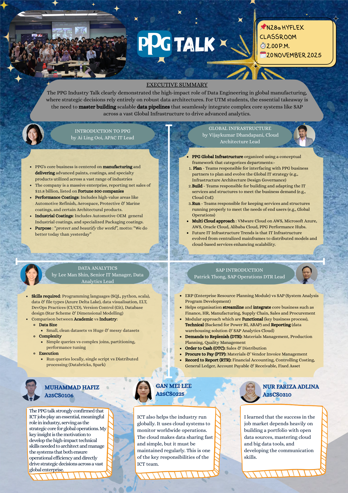

I attended a professional industry talk by PPG held at the HyFlex Classroom, N28a. This session is a core component of my individual e-portfolio , designed to showcase my learning progression and achievement throughout the semester.
The talk featured industry experts who detailed the complexities of managing IT for a global enterprise, bridging the gap between academic theory and real-world digital infrastructure. By documenting this experience, I aim to reflect on the evolving role of ICT in driving strategic decisions across vast organizations

I gained a clear understanding of how global enterprises are transitioning from legacy mainframes to sophisticated Multi-Cloud strategies utilizing Azure, AWS, and Alibaba Cloud. The talk highlighted the massive scale of industry data compared to academic datasets, emphasizing the necessity of distributed processing tools like Databricks and Spark. Furthermore, I learned how SAP operations integrate Finance, HR, and Supply Chain modules to streamline essential business cycles such as "Order to Cash" and "Procure to Pay."
Moving forward, I need to improve my technical familiarity with enterprise resource planning (ERP) systems to better grasp how specific modules interact within a live production environment. I also realize that I should conduct more preliminary research on cloud architecture before attending such talks to engage more deeply with the speakers during Q&A sessions. Reflecting on the importance of clear communication in my e-portfolio, I will work on synthesizing complex technical information into more concise and professional summaries.
This talk was a transformative experience that confirmed ICT jobs are the strategic core of modern global operations, sparking deep interest in the field. It has motivated me to develop high-impact technical skills in Data Engineering so that I can eventually architect systems that ensure enterprise-level efficiency. I am incredibly grateful to speakers Ai Ling Ooi, Lee Man Shin, Vijaykumar Dhandapani, and Patrick Thong for providing such invaluable exposure to the professional IT landscape